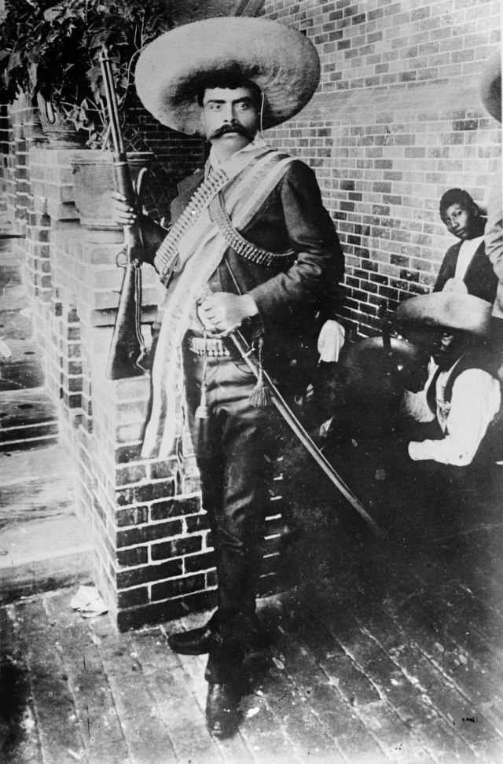
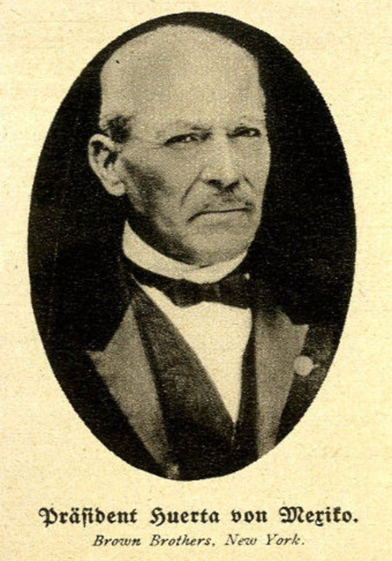

⟵
Lucha contra el régimen de Huerta
Plan de Guadalupe
Avance del Ejército Constitucio - nalista
Pancho Villa y su fuerza en el norte
Emiliano Zapata y el Plan de Ayala en el sur

Renuncia de Huerta en 1914
